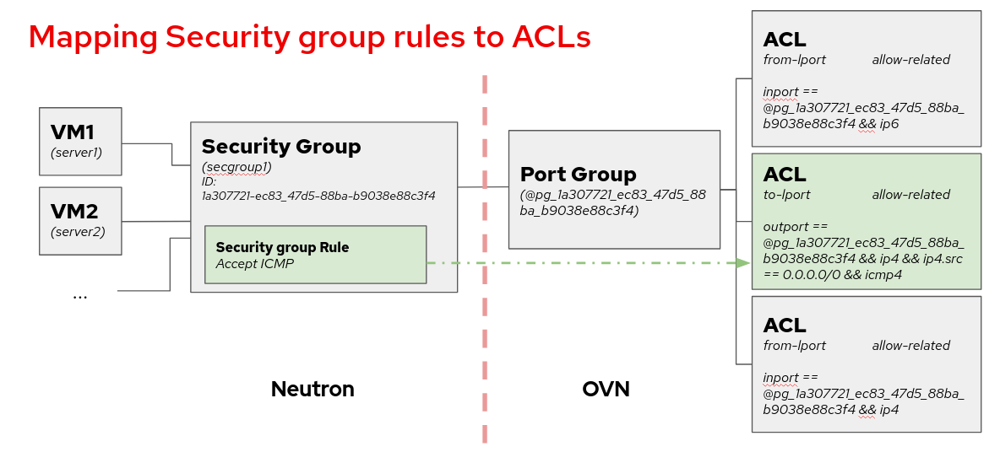
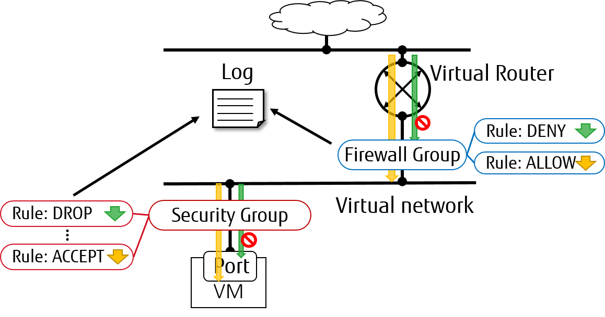

Packet Logging Framework¶
Packet logging service is designed as a Neutron plug-in that captures network packets for relevant resources (e.g. security group or firewall group) when the registered events occur.
ML2/OVN Driver¶
Supported loggable resource types¶
From the Wallaby release the ML2/OVN driver supports the security_group
resource.
The following diagram shows a mapping from Neutron security group framework to the ACLs, which are the resources where we enable the logging when using ML2/OVN. Each security group rule maps to an ACL associated to a port group that contains all the ports belonging to the security group.

For more details on the developing peculiarities of this implementation, you can check the contributors documentation.
Service Configuration¶
To enable the logging service, add log to the service_plugins setting
in /etc/neutron/neutron.conf:
service_plugins = router,metering,log
It is possible to set parameters in ml2_conf.ini to tune how we want to log the
packets by modifying rate_limit and burst_limit in section
[network_log] in /etc/neutron/plugins/ml2/ml2_conf.ini:
rate_limit- Limit the packet rate of the logs that are sent to the OVN controller, in packets per second. The higher the number, the more logs we will get in the log file.burst_limit- Increase the packet rate limit by the specified value for a short period of time.
[network_log]
rate_limit = 150
burst_limit = 50
Note
There is a minimum value for these parameters. For rate_limit it is
100 and for burst_limit it is 25.
In order to make the changes to rate and burst effective, restart the neutron-server service. To ensure the configuration for rate and burst was updated, check the meter-band table on the OVN Northbound database. You need to create at least one log object to see the meter band entry created.
$ ovn-nbctl list meter-band
Service workflow¶
Create a logging resource with security group as resource type:
$ openstack network log create --resource-type security_group \
--resource sg1 --event ALL log1
+-----------------+--------------------------------------+
| Field | Value |
+-----------------+--------------------------------------+
| Description | |
| Enabled | True |
| Event | ALL |
| ID | 67b1f618-0b89-4b9c-b3e4-9378b4472175 |
| Name | log1 |
| Project | 74731b187a824a8d9b85a12b6eacbcbb |
| Resource | 387494cb-392a-4760-8c36-09be2fdb0b49 |
| Target | None |
| Type | security_group |
| created_at | 2023-07-31T09:44:34Z |
| revision_number | 0 |
| tenant_id | 74731b187a824a8d9b85a12b6eacbcbb |
| updated_at | 2023-07-31T09:44:34Z |
+-----------------+--------------------------------------+
Note
Due to the internal design of the ML2/OVN driver, there is one ACL that aggregates all dropped traffic, instead of having one drop ACL per security group. Since the smallest logging unit in OVN is the ACL, that means that if we choose to log DROP traffic, we will get traffic logged from all security groups.
If we choose to log ALL traffic, we will get the accepted traffic from the selected security group, but the dropped traffic from all security groups.
This can change in following releases if the ACL management is redesigned in OVN.
Warning
We cannot assign individual ports when using ML2/OVN, so the --target
parameter is not used.
Just as with ML2/OVS, we can enable or disable logging objects at runtime. If we have two objects targeted to log the same resource, as long as one of them is enabled, the resource will be logged on the logfile.
Understanding the logging¶
In ML2/OVN we find the packet monitoring logging recorded on each
ovn-controller.log file within the compute nodes. This means that we will
have as many logfiles as compute nodes, because each OVN controller has the
capacity of logging only the traffic they manage. The location of the OVN
controller log may differ depending on the distribution, please consult your
installation documentation for more details. The format of the logging is:
2023-01-08T17:57:28.283002425+00:00 stderr F
2023-01-08T17:57:28Z|00094|acl_log(ovn_pinctrl0)|INFO|
name="neutron-e9ebf19c-3d84-49ae-a81e-7a01035a8768", verdict=allow,
severity=info, direction=to-lport: icmp, vlan_tci=0x0000,
dl_src=fa:16:3e:d3:b4:48, dl_dst=fa:16:3e:9a:d9:7d, nw_src=10.0.0.67,
nw_dst=192.168.100.11, nw_tos=0, nw_ecn=0, nw_ttl=63, nw_frag=no,
icmp_type=8, icmp_code=0
In this example, the name is neutron-<security group log object ID>. We can
also see the verdict, the severity, the direction of the datagram and the
content.
ML2/OVS Driver¶

Supported loggable resource types¶
From Rocky Release, the ML2/OVS driver supports both security_group and
firewall_group as resource types in the Neutron packet logging framework.
Service Configuration¶
To enable the logging service, follow the below steps.
On Neutron controller node, add
logtoservice_pluginssetting in/etc/neutron/neutron.conffile. For example:service_plugins = router,metering,log
To enable logging service for
security_groupin Layer 2, addlogto optionextensionsin section[agent]in/etc/neutron/plugins/ml2/ml2_conf.inifor controller node and in/etc/neutron/plugins/ml2/openvswitch_agent.inifor compute/network nodes. For example:[agent] extensions = log
Note
Fwaas v2 log is currently only supported by openvswitch.
To enable logging service for
firewall_groupin Layer 3, addfwaas_v2_logto optionextensionsin section[AGENT]in/etc/neutron/l3_agent.inifor network nodes. For example:[AGENT] extensions = fwaas_v2,fwaas_v2_log
On compute/network nodes, add configuration for logging service to
[network_log]in/etc/neutron/plugins/ml2/openvswitch_agent.iniand in/etc/neutron/l3_agent.inias shown below:[network_log] rate_limit = 100 burst_limit = 25 #local_output_log_base = <None>
In which,
rate_limitis used to configure the maximum number of packets to be logged per second (packets per second). When a high rate triggersrate_limit, logging queues packets to be logged.burst_limitis used to configure the maximum of queued packets. And logged packets can be stored anywhere by usinglocal_output_log_base.Note
It requires at least
100forrate_limitand at least25forburst_limit.If
rate_limitis unset, logging will log unlimited.If we don’t specify
local_output_log_base, logged packets will be stored in system journal like/var/log/syslogby default.
Trusted projects policy.yaml configuration¶
With the default /etc/neutron/policy.yaml, administrators must set up
resource logging on behalf of the cloud projects.
If projects are trusted to administer their own loggable resources in their
cloud, neutron’s policy file policy.yaml can be modified to allow this.
Modify /etc/neutron/policy.yaml entries as follows:
"get_loggable_resources": "rule:regular_user"
"create_log": "rule:regular_user"
"get_log": "rule:regular_user"
"get_logs": "rule:regular_user"
"update_log": "rule:regular_user"
"delete_log": "rule:regular_user"
Service workflow for Operator¶
To check the loggable resources that are supported by framework:
$ openstack network loggable resources list +-----------------+ | Supported types | +-----------------+ | security_group | | firewall_group | +-----------------+
Note
In VM ports, logging for
security_groupin currently works withopenvswitchfirewall driver.Logging for
firewall_groupworks on internal router ports only. VM ports would be supported in the future.
Log creation:
Create a logging resource with an appropriate resource type
$ openstack network log create --resource-type security_group \ --description "Collecting all security events" \ --event ALL Log_Created +-----------------+------------------------------------------------+ | Field | Value | +-----------------+------------------------------------------------+ | Description | Collecting all security events | | Enabled | True | | Event | ALL | | ID | 8085c3e6-0fa2-4954-b5ce-ff6207931b6d | | Name | Log_Created | | Project | 02568bd62b414221956f15dbe9527d16 | | Resource | None | | Target | None | | Type | security_group | | created_at | 2017-07-05T02:56:43Z | | revision_number | 0 | | tenant_id | 02568bd62b414221956f15dbe9527d16 | | updated_at | 2017-07-05T02:56:43Z | +-----------------+------------------------------------------------+
Warning
In the case of
--resourceand--targetare not specified from the request, these arguments will be assigned toALLby default. Hence, there is an enormous range of log events will be created.Create logging resource with a given resource (sg1 or fwg1)
$ openstack network log create my-log --resource-type security_group --resource sg1 $ openstack network log create my-log --resource-type firewall_group --resource fwg1
Create logging resource with a given target (portA)
$ openstack network log create my-log --resource-type security_group --target portA
Create logging resource for only the given target (portB) and the given resource (sg1 or fwg1)
$ openstack network log create my-log --resource-type security_group --target portB --resource sg1 $ openstack network log create my-log --resource-type firewall_group --target portB --resource fwg1
Note
The
Enabledfield is set toTrueby default. If enabled, logged events are written to the destination iflocal_output_log_baseis configured or/var/log/syslogin default.The
Eventfield will be set toALLif--eventis not specified from log creation request.
Enable/Disable log
We can
enableordisablelogging objects at runtime. It means that it will apply to all registered ports with the logging object immediately. For example:$ openstack network log set --disable Log_Created $ openstack network log show Log_Created +-----------------+------------------------------------------------+ | Field | Value | +-----------------+------------------------------------------------+ | Description | Collecting all security events | | Enabled | False | | Event | ALL | | ID | 8085c3e6-0fa2-4954-b5ce-ff6207931b6d | | Name | Log_Created | | Project | 02568bd62b414221956f15dbe9527d16 | | Resource | None | | Target | None | | Type | security_group | | created_at | 2017-07-05T02:56:43Z | | revision_number | 1 | | tenant_id | 02568bd62b414221956f15dbe9527d16 | | updated_at | 2017-07-05T03:12:01Z | +-----------------+------------------------------------------------+
Logged events description¶
Currently, packet logging framework supports to collect ACCEPT or DROP
or both events related to registered resources. As mentioned above, Neutron
packet logging framework offers two loggable resources through the log
service plug-in: security_group and firewall_group.
The general characteristics of each event will be shown as the following:
Log every
DROPevent: EveryDROPsecurity events will be generated when an incoming or outgoing session is blocked by the security groups or firewall groupsLog an
ACCEPTevent: TheACCEPTsecurity event will be generated only for eachNEWincoming or outgoing session that is allowed by security groups or firewall groups. More details for theACCEPTevents are shown as bellow:North/South
ACCEPT: For a North/South session there would be a singleACCEPTevent irrespective of direction.East/West
ACCEPT/ACCEPT: In an intra-project East/West session where the originating port allows the session and the destination port allows the session, i.e. the traffic is allowed, there would be twoACCEPTsecurity events generated, one from the perspective of the originating port and one from the perspective of the destination port.East/West
ACCEPT/DROP: In an intra-project East/West session initiation where the originating port allows the session and the destination port does not allow the session there would beACCEPTsecurity events generated from the perspective of the originating port andDROPsecurity events generated from the perspective of the destination port.
The security events that are collected by security group should include:
A timestamp of the flow.
A status of the flow
ACCEPT/DROP.An indication of the originator of the flow, e.g which project or log resource generated the events.
An identifier of the associated instance interface (neutron port id).
A layer 2, 3 and 4 information (mac, address, port, protocol, etc).
Security event record format:
Logged data of an
ACCEPTevent would look like:May 5 09:05:07 action=ACCEPT project_id=736672c700cd43e1bd321aeaf940365c log_resource_ids=['4522efdf-8d44-4e19-b237-64cafc49469b', '42332d89-df42-4588-a2bb-3ce50829ac51'] vm_port=e0259ade-86de-482e-a717-f58258f7173f ethernet(dst='fa:16:3e:ec:36:32',ethertype=2048,src='fa:16:3e:50:aa:b5'), ipv4(csum=62071,dst='10.0.0.4',flags=2,header_length=5,identification=36638,offset=0, option=None,proto=6,src='172.24.4.10',tos=0,total_length=60,ttl=63,version=4), tcp(ack=0,bits=2,csum=15097,dst_port=80,offset=10,option=[TCPOptionMaximumSegmentSize(kind=2,length=4,max_seg_size=1460), TCPOptionSACKPermitted(kind=4,length=2), TCPOptionTimestamps(kind=8,length=10,ts_ecr=0,ts_val=196418896), TCPOptionNoOperation(kind=1,length=1), TCPOptionWindowScale(kind=3,length=3,shift_cnt=3)], seq=3284890090,src_port=47825,urgent=0,window_size=14600)
Logged data of a
DROPevent:May 5 09:05:07 action=DROP project_id=736672c700cd43e1bd321aeaf940365c log_resource_ids=['4522efdf-8d44-4e19-b237-64cafc49469b'] vm_port=e0259ade-86de-482e-a717-f58258f7173f ethernet(dst='fa:16:3e:ec:36:32',ethertype=2048,src='fa:16:3e:50:aa:b5'), ipv4(csum=62071,dst='10.0.0.4',flags=2,header_length=5,identification=36638,offset=0, option=None,proto=6,src='172.24.4.10',tos=0,total_length=60,ttl=63,version=4), tcp(ack=0,bits=2,csum=15097,dst_port=80,offset=10,option=[TCPOptionMaximumSegmentSize(kind=2,length=4,max_seg_size=1460), TCPOptionSACKPermitted(kind=4,length=2), TCPOptionTimestamps(kind=8,length=10,ts_ecr=0,ts_val=196418896), TCPOptionNoOperation(kind=1,length=1), TCPOptionWindowScale(kind=3,length=3,shift_cnt=3)], seq=3284890090,src_port=47825,urgent=0,window_size=14600)
The events that are collected by firewall group should include:
A timestamp of the flow.
A status of the flow
ACCEPT/DROP.The identifier of log objects that are collecting this event
An identifier of the associated instance interface (neutron port id).
A layer 2, 3 and 4 information (mac, address, port, protocol, etc).
Security event record format:
Logged data of an
ACCEPTevent would look like:Jul 26 14:46:20: action=ACCEPT, log_resource_ids=[u'2e030f3a-e93d-4a76-bc60-1d11c0f6561b'], port=9882c485-b808-4a34-a3fb-b537642c66b2 pkt=ethernet(dst='fa:16:3e:8f:47:c5',ethertype=2048,src='fa:16:3e:1b:3e:67') ipv4(csum=47423,dst='10.10.1.16',flags=2,header_length=5,identification=27969,offset=0,option=None,proto=1,src='10.10.0.5',tos=0,total_length=84,ttl=63,version=4) icmp(code=0,csum=41376,data=echo(data='\xe5\xf2\xfej\x00\x00\x00\x00\x00\x00\x00\x00\x00\x00\x00\x00\x00\x00\x00\x00 \x00\x00\x00\x00\x00\x00\x00\x00\x00\x00\x00\x00\x00\x00\x00\x00\x00\x00\x00\x00\x00\x00\x00\x00\x00\x00\x00\x00\x00 \x00\x00\x00\x00\x00\x00\x00',id=29185,seq=0),type=8)
Logged data of a
DROPevent:Jul 26 14:51:20: action=DROP, log_resource_ids=[u'2e030f3a-e93d-4a76-bc60-1d11c0f6561b'], port=9882c485-b808-4a34-a3fb-b537642c66b2 pkt=ethernet(dst='fa:16:3e:32:7d:ff',ethertype=2048,src='fa:16:3e:28:83:51') ipv4(csum=17518,dst='10.10.0.5',flags=2,header_length=5,identification=57874,offset=0,option=None,proto=1,src='10.10.1.16',tos=0,total_length=84,ttl=63,version=4) icmp(code=0,csum=23772,data=echo(data='\x8a\xa0\xac|\x00\x00\x00\x00\x00\x00\x00\x00\x00\x00\x00\x00\x00\x00\x00\x00 \x00\x00\x00\x00\x00\x00\x00\x00\x00\x00\x00\x00\x00\x00\x00\x00\x00\x00\x00\x00\x00\x00\x00\x00\x00\x00\x00\x00\x00 \x00\x00\x00\x00\x00\x00\x00',id=25601,seq=5),type=8)
Note
No other extraneous events are generated within the security event logs, e.g. no debugging data, etc.

{kind=link}
{kind=link}